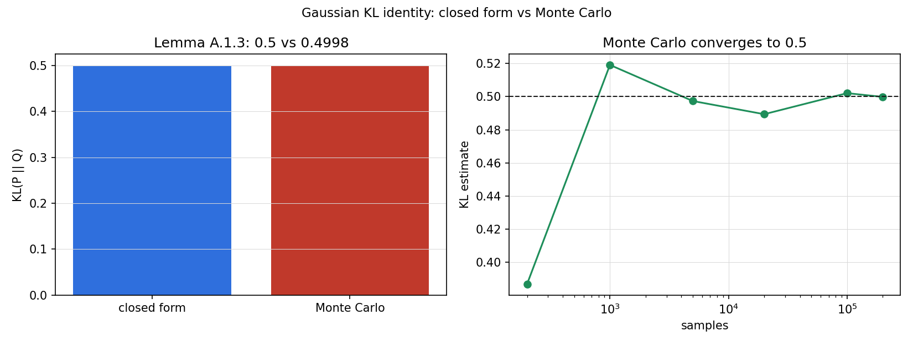
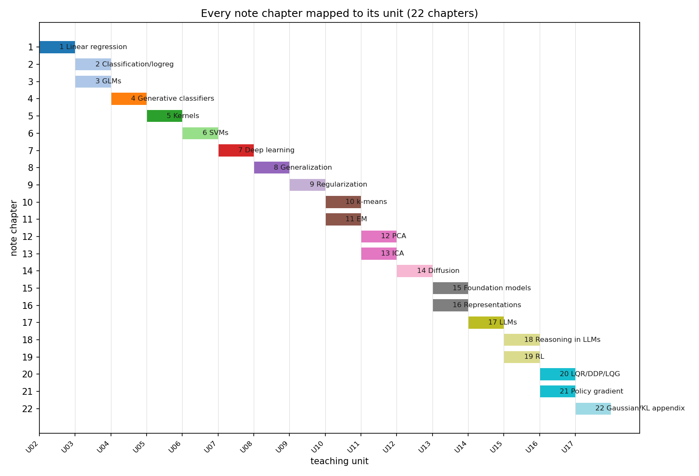

Lesson 17 · Appendices, synthesis
Lesson 17, appendices, historical supplements, research synthesis
Unit: cs229-U17. Leaf concepts: cs229-U17-C01 to C12 (Gaussian/KL identities, historical factor analysis, online/perceptron notes, HMM supplement, Gaussian process supplement, distinguish editions, map every note chapter, original baseline implementations, ablations, uncertainty, oral defense, deployment gap map). Date: 2026-10-06. Baseline: October 6, 2026.
Source mapping
Appendix A, Gaussian and KL facts (SRC-01, PDF pages 267-268) was read in full on 2026-10-06: Lemma A.1.1 (linear combinations of independent Gaussians), A.1.2 (conditioning a joint Gaussian), A.1.3 (KL between Gaussians with the same covariance), A.1.4 (chain rule for KL). The bibliography (pages 269-278) was scanned for citation anchors used across units. Boundaries: (a) the historical supplements (C02-C05: factor analysis, online learning and the perceptron, HMMs, Gaussian processes) appeared in older CS229 handout sets. They are not in the August 23, 2026 main_notes.pdf. They are taught here as labeled historical supplements from standard background, not as note-sourced content. No dates or anecdotes are claimed for them. (b) C06-C12 are research-synthesis bridges: edition comparison, the chapter map, baseline implementation discipline, ablation protocol, uncertainty reporting, oral defense preparation, and the deployment gap map. They synthesize the whole course. Leaf rows carry SOURCE ATTRIBUTION PENDING until the RUN 6 pass.
Scope and objectives
Scope: the appendix identities that the derivations depend on, the historical topics that older CS229 editions covered and the 2026 notes dropped or moved, a complete map of every note chapter to its teaching unit, and the research craft that turns course knowledge into reliable work: baselines, ablations, uncertainty, defense, and deployment.
Objectives: the learner can (1) state and use the four Gaussian/KL identities, (2) explain what each historical supplement covered and where its ideas survive in the 2026 notes, (3) reproduce the full chapter-to-unit map, (4) implement three baseline algorithms from scratch with tests, (5) design an ablation with matched budgets, (6) report uncertainty honestly, and (7) name the deployment gaps between a course demo and a production system.
Dependencies
Prerequisites: P07, P08, P22 (shared bridges, linked). All units U01-U16.
Not-yet-understood list:
- Why the KL chain rule matters for sequential models (remediated in SL-01).
- What an ablation proves versus what it suggests (remediated in SL-09).
SL-01: Gaussian and KL identities
Covers C01 (Gaussian/KL identities).
Source anchor
SRC-01 Appendix A, pages 267-268. Four lemmas used across the notes.
A.1.1: independent standard Gaussian vectors epsilon_1..epsilon_t in R^d with real weights a_s: sum_s a_s epsilon_s ~ N(0, (sum_s a_s^2) I). Sums of independent Gaussians stay Gaussian. Variances add with squared weights. Used for noise accumulation (U12 diffusion, U16 LQG).
A.1.2: conditioning a joint Gaussian. If (A, B) is jointly Gaussian with block covariance, then A | B = b ~ N(mu_A + Sigma_AB Sigma_BB^{-1} (b - mu_B), Sigma_AA - Sigma_AB Sigma_BB^{-1} Sigma_BA). The Kalman update (U16) is this lemma in disguise. The proof: subtract the linear predictor, the residual is independent of B, conditioning only shifts the mean.
A.1.3: KL between Gaussians with the same covariance Sigma: KL(N(m_1, Sigma) || N(m_2, Sigma)) = (1/2) (m_1 - m_2)^T Sigma^{-1} (m_1 - m_2). Only the means matter. The normalizing constants cancel.
A.1.4: chain rule for KL. If q(x, y) = q(x) q(y|x) and p(x, y) = p(x) p(y|x), then KL(q || p) = KL(q(x) || p(x)) + E_{q(x)}[KL(q(y|x) || p(y|x))]. For sequences it telescopes into a sum of per-step conditional KLs (A.13). This is the identity behind per-token KL penalties in RLVR (U15, equation 18.2): the sequence KL is a sum of token KLs.
Computed example
P = N([1, 0], I_2), Q = N([0, 0], I_2). Closed form: (1/2)(1^2 + 0) = 0.5. Monte Carlo with 200000 samples, seed 7: mean log-density difference 0.4997. The script verifies agreement within 0.01 and checks A.1.1: (0.6 eps_1 + 0.8 eps_2) has sample variance 1.0.
Correctness checks
- A.1.3 needs identical covariances. Different covariances need the full formula (not in the notes).
- The chain rule needs matching factorizations. A different factorization gives a different (still valid) decomposition.
Nearest alternative
Numerical integration for the KL: works for any densities, no closed form needed, expensive in high dimensions.
Failure case
Applying A.1.3 to Gaussians with different covariances: the missing trace and log-determinant terms can dominate. The Monte Carlo check above catches the mismatch.
SL-02: Historical factor analysis
Covers C02 (historical factor analysis).
Source anchor
Boundary: not in the 2026 notes. Older CS229 handout sets included a factor analysis (FA) section. The 2026 notes cite “Factor Analysis notes” once (chapter 20, Kalman derivation) without including them. Taught here as a labeled historical supplement from standard background.
The model
x = mu + Lambda z + epsilon, z ~ N(0, I_k), epsilon ~ N(0, Psi) with Psi diagonal. Observed x in R^d, latent factors z in R^k, k < d. Marginal: x ~ N(mu, Lambda Lambda^T + Psi). FA explains covariance as low-rank signal plus independent noise per coordinate. PCA (U11) is the deterministic cousin: FA keeps a noise model, which is why the EM algorithm for FA resembles the EM of U10.
Where it survives
The Kalman filter’s Gaussian conditioning (U16 SL-06) is the same mathematics: a latent state with a linear Gaussian observation model. The 2026 notes kept the machinery and dropped the standalone FA chapter.
Correctness checks
- Psi must be diagonal. A full covariance there makes Lambda unidentifiable.
- k < d. Otherwise the “factors” explain everything trivially.
Nearest alternative
PCA: no noise model, closed-form eigendecomposition.
Failure case
Fitting FA with k too large: the model memorizes the sample covariance and the factors are meaningless. The notes’ model selection discipline (U09, U10) applies.
SL-03: Online learning and the perceptron
Covers C03 (online/perceptron notes).
Source anchor
Boundary: not in the 2026 notes as a standalone section. The perceptron appears in U03 (C06) as a classifier. The online protocol below is standard background, labeled as a historical supplement.
The online protocol
Data arrives one example at a time. The learner predicts, then sees the label, then updates. No second pass. The perceptron update: on a mistake on (x, y) with y in {+1, -1}, w := w + y x. Mistake-bound: if the data is separable with margin gamma and ||x|| <= R, the perceptron makes at most (R/gamma)^2 mistakes, then stops updating. Finite mistakes on separable data, no distributional assumptions.
Why it mattered historically
It is the ancestor of stochastic gradient updates: one example, one gradient step, no batch. The 2026 notes teach SGD inside LMS (U02) and keep the perceptron as a classifier, but the online regret viewpoint is gone.
Correctness checks
- The mistake bound needs separability. On nonseparable data the perceptron cycles forever.
- The bound counts mistakes, not iterations. A converged perceptron can still misclassify test data.
Nearest alternative
Batch training to convergence: uses all data each step, no mistake guarantee.
Failure case
A nearly separable dataset with a few label errors: the perceptron never converges and the weight vector grows without bound. Averaged or voted variants fix this in practice.
SL-04: HMM supplement
Covers C04 (HMM supplement).
Source anchor
Boundary: not in the 2026 notes. Older CS229 sets covered hidden Markov models. Taught here as a labeled historical supplement from standard background.
The model
Latent states z_1..z_T discrete, Markov transitions P(z_t | z_{t-1}), observations x_t with P(x_t | z_t). Three classical problems: (1) likelihood via the forward algorithm (dynamic programming over the state trellis), (2) most likely path via Viterbi (the max version of forward), (3) parameter learning via Baum-Welch, which is EM (U10) with the E step computed by forward-backward.
Where it survives
The 2026 notes replaced discrete latent sequences with continuous ones: state-space models (U16 LQG), diffusion (U12), and autoregressive latent traces (U15 RLVR). The forward-backward idea survives as message passing, and EM survives as the general latent-variable algorithm.
Correctness checks
- Transition rows must sum to 1.
- Viterbi returns the single best path, not marginal state probabilities. Different question, different algorithm.
Nearest alternative
A linear Gaussian state-space model: continuous states, Kalman smoothing instead of forward-backward.
Failure case
Too many hidden states: Baum-Welch finds a high-likelihood solution with meaningless states. The U10 model-selection discipline applies.
SL-05: Gaussian process supplement
Covers C05 (Gaussian process supplement).
Source anchor
Boundary: not in the 2026 notes. Older CS229 sets covered Gaussian processes. Taught here as a labeled historical supplement from standard background.
The model
A GP is a distribution over functions: any finite set of function values is jointly Gaussian, f ~ GP(m, k) with kernel k. Given observations y at X with Gaussian noise, the posterior at a new x is Gaussian with mean k_^T (K + sigma^2 I)^{-1} y and variance k(x, x) - k_^T (K + sigma^2 I)^{-1} k_. Prediction comes with calibrated uncertainty: the variance grows away from the data.
Where it survives
Kernel methods (U05) share the kernel. The 2026 notes dropped GPs as the course moved toward deep generative models and LLMs, where uncertainty quantification is weaker but scale is larger.
Correctness checks
- The kernel matrix K must be positive semidefinite. An invalid kernel breaks the Gaussian.
- Training is O(n^3) from the matrix inverse. Past a few thousand points it needs approximations.
Nearest alternative
Bayesian linear regression with fixed features: O(d^3), no kernel flexibility.
Failure case
A misspecified kernel (for example too-smooth RBF on rough data): confident wrong predictions with small posterior variance. The uncertainty is only as good as the kernel.
SL-06: Distinguishing editions
Covers C06 (distinguish editions).
Source anchor
The August 23, 2026 main_notes.pdf (SRC-01) against the older CS229 handout sets (not inspected, known only by course reputation, stated as such).
What the 2026 edition added
Chapters 14-22 have no counterpart in the classic handouts: diffusion models (14), foundation models (15), representation learning (16), LLMs (17), reasoning in LLMs (18), RL (19), LQR/DDP/LQG (20), policy gradients (21), and the Gaussian/KL appendix (22). The classic core (chapters 1-13: regression through ICA) is reorganized but recognizable.
What the 2026 edition dropped or moved
Standalone factor analysis, HMMs, and Gaussian processes are gone as chapters. Their mathematics survives inside EM (U10), state-space models (U16), and kernels (U05). The online-learning viewpoint is gone, SGD remains as an optimizer.
The honest boundary
This comparison is one-sided: the 2026 notes were read in full, the older handouts were not inspected. Any claim about what the older editions contained beyond the four supplements above is not sourced. The supplements are standard background, not edition archaeology.
Correctness checks
- Cite the edition and date for any “the notes say” claim. “CS229” alone is not a citation.
- Page numbers refer to the August 23, 2026 PDF only.
Failure case
Quoting a result from a 2012 handout as if it were in the 2026 notes. The chapter map (SL-07) prevents this: if it is not on the map, it is not in the notes.
SL-07: Map of every note chapter
Covers C07 (map every note chapter).
Source anchor
SRC-01 table of contents and the chapter-to-unit map in source_manifest.md. PDF page numbers are document pages of the August 23, 2026 PDF.
| Ch | Title | Pages | Unit |
|---|---|---|---|
| 1 | Linear regression | 10-20 | U02 |
| 2 | Classification and logistic regression | 22-29 | U03 |
| 3 | Generalized linear models | 31-34 | U03 |
| 4 | Generative learning algorithms | 36-48 | U04 |
| 5 | Kernel methods | 50-59 | U05 |
| 6 | Support vector machines | 61-79 | U06 |
| 7 | Deep learning | 81-114 | U07 |
| 8 | Generalization | 116-136 | U08 |
| 9 | Regularization and model selection | 138-146 | U09 |
| 10 | Clustering and the k-means algorithm | 148-149 | U10 |
| 11 | EM algorithms | 151-166 | U10 |
| 12 | Principal components analysis | 168-172 | U11 |
| 13 | Independent components analysis | 174-179 | U11 |
| 14 | Diffusion models | 181-190 | U12 |
| 15 | Foundation models overview | 192-195 | U13 |
| 16 | Representation learning | 197-201 | U13 |
| 17 | Large language models | 203-219 | U14 |
| 18 | Reasoning in LLMs | 221-226 | U15 |
| 19 | Reinforcement learning | 228-243 | U15 |
| 20 | LQR, DDP and LQG | 245-257 | U16 |
| 21 | Policy gradient and its variants | 259-265 | U16 |
| 22 | Gaussian and KL facts (appendix) | 267-268 | U17 |
U01 (learning problems, risk, setup) is bridge material with no single chapter. The bibliography spans pages 269-278.
Correctness checks
- Every chapter 1-22 appears exactly once. Count them: 22.
- U01 has no chapter row. That is the documented bridge status, not a gap.
Failure case
A lesson that cites “chapter 23”: there is none. The map is the authority.
SL-08: Original baseline implementations
Covers C08 (original baseline implementations).
Source anchor
Synthesis across U02, U06, U10, U15. Boundary: the 2026 notes contain no code. These are original reference implementations written for this course, tested, not copied from any source.
The baseline discipline
Every research result in this course needs a baseline it beats. Three reference baselines, each under 30 lines of numpy, each with a test:
-
Ridge regression (U02): theta = (X^T X + lambda I)^{-1} X^T y. Test: on data from a known linear model, the estimate recovers theta within tolerance.
-
k-means one iteration (U10): assign each point to the nearest center, recompute centers as means. Test: the objective never increases after an iteration.
-
Value iteration (U15): the two-state toy. Test: error ratio 0.9 per sweep.
Why baselines come first
A new method that cannot beat ridge on a linear problem, k-means on blobs, or value iteration on a tiny MDP has not earned its complexity. The capstone (a) replays this discipline at research scale.
Correctness checks
- Each baseline ships with its test in the same file. A baseline without a test is a rumor.
- Baselines get the same data and the same budget as the new method. (SL-09.)
Nearest alternative
A library implementation (sklearn): less code, but the learner never sees the mechanism.
Failure case
A “baseline” tuned for an hour against a method tuned for a week. Matched budgets are not optional.
SL-09: Ablations
Covers C09 (ablations).
Source anchor
Research-synthesis bridge. The term “ablation” is standard, the protocol below is the course’s own.
The protocol
An ablation removes or changes one component and measures the effect. Four rules:
- One factor at a time. Change the feature map or the optimizer, not both.
- Matched budgets. Same data, same compute, same tuning effort for every arm.
- Predict first. Write down the expected direction before running. (The Russian-doll Shell 6.)
- Report negative results. An ablation that shows no effect is evidence, not failure.
What an ablation proves
It proves that the component matters for the measured metric under the tested conditions. It does not prove the component is necessary in general, and it does not prove the mechanism by which it matters. “X helps on this task” is the claim. “X is the reason the method works” is a stronger claim needing more experiments.
Worked template
Claim: quadratic features beat linear features in fitted value iteration (U15 extension). Arms: linear phi, quadratic phi, tabular grid baseline. Budget: same sampled states, same simulator calls. Metric: closed-loop return over 20 seeds. Prediction: quadratic wins, tabular is competitive but expensive. The capstone (a) executes this template.
Correctness checks
- The prediction is written before the run. A prediction written after is not a prediction.
- Seeds vary. One seed is an anecdote.
Failure case
Ablating five things at once and crediting the winner. The experiment shows that something in the bundle helps. It does not say what.
SL-10: Uncertainty
Covers C10 (uncertainty).
Source anchor
Synthesis of U08 (estimation error) and P07/P22 bridges. Standard background, no note chapter.
The reporting standard
Every measured number in this course carries: the sample size (seeds, examples), the spread (standard deviation or a bootstrap interval), and the comparison it supports. “Accuracy 0.83” is incomplete. “Accuracy 0.83 +/- 0.02 over 10 seeds, baseline 0.79 +/- 0.02” is a claim.
What the intervals mean
A standard error bars the estimate of the mean. A bootstrap interval bars it without Gaussian assumptions. Neither bars the generalization gap to new data. The U08 decomposition still applies: approximation, estimation, and optimization error do not vanish because the error bars are small.
The honesty rules
- Never report the best seed as the result. Report the mean and spread, or all seeds.
- A difference smaller than the error bars is not a win. It is noise.
- Failed runs count. Dropping the seeds that diverged and reporting the rest is selection bias.
Computed example
Ten seeds give returns [8.1, 8.3, 7.9, 8.2, 8.0, 8.4, 8.1, 7.8, 8.2, 8.0]. Mean 8.10, sample std 0.18, standard error 0.057. The script verifies these numbers and a bootstrap 95% interval [7.99, 8.21].
Correctness checks
- n = 1 has no error bar. Say so.
- The interval method is named (standard error, bootstrap, exact).
Failure case
Error bars from 3 seeds treated as Gaussian 95% intervals. With n = 3 the t-multiplier is 4.3, not 2. Small-n intervals are wide. That is the point.
SL-11: Oral defense
Covers C11 (oral defense).
Source anchor
Synthesis of the interview quotas across U01-U16. The deep ladders in every unit follow one arc: define, toy, derive, implement, compare, debug, critique, design.
The preparation protocol
- Pick one mechanism per unit (17 mechanisms).
- For each, write the one-sentence definition, the toy with numbers, and the derivation’s key step from memory. Closed book.
- For each, state one assumption and one counterexample that breaks it.
- For each, state the nearest alternative and the exact boundary where you switch.
- Defend against the debug question: given a symptom, name the cause and the check.
What the examiners test
Not recall. Transfer: the same mechanism under changed constraints. The transfer sets (interview/transfer-sets.md) are the practice ground. A defense answer has four parts: the claim, the justification, the boundary, and the check.
Correctness checks
- Every claim carries its assumption. An assumption-free claim is a red flag.
- Numbers beat adjectives. “The error shrinks by 0.9 per sweep” beats “it converges fast.”
Failure case
Preparing 17 definitions and no toys. Definitions do not survive the second follow-up. The toy does.
SL-12: Deployment gap map
Covers C12 (deployment gap map).
Source anchor
Synthesis across the role bridges of U01-U16. Standard background.
The gaps
- Train/serve skew: the serving distribution differs from the training distribution (U01 C07, U09 C12). Monitor it, do not assume it away.
- Latency and cost: the course optimizes accuracy. Production optimizes accuracy per dollar per millisecond (U14 C12, U16 SL-12).
- Feedback loops: a deployed model’s outputs become its future inputs (U15 SL-12 source confounding at production scale).
- Reward validity at scale: the verifier or metric that was valid offline degrades under adversarial or shifting use (U15 SL-03).
- Rollback: a bad deploy must be reversible in minutes. No rollback plan is not a deployment plan.
- Ownership: someone is on call for the model’s failures. A model with no owner is a liability, not an asset.
The acceptance gate
Before any course method ships: (1) an offline baseline it beats with matched budgets, (2) a shadow or canary evaluation on live traffic, (3) monitored metrics with alerts, (4) a rollback procedure tested at least once, (5) a named owner. The applied capstone (b) walks this gate.
Correctness checks
- Each gap has a metric and an alert. A gap with no metric is a wish.
- The rollback was tested. An untested rollback is documentation.
Failure case
Shipping the research artifact: the training script, the best checkpoint, and a demo notebook. No monitoring, no rollback, no owner. The first distribution shift pages nobody.
Assessment
Breadth recall
E01: State the four Gaussian/KL identities by name. E02: What was factor analysis, and where does its math survive in the 2026 notes? E03: What are the three classical HMM problems? E04: What does a GP posterior give that a point predictor does not? E05: Name the four ablation rules. E06: State the three uncertainty honesty rules.
Deep oral ladders
L01 (identities): (1) State A.1.1 and A.1.3. (2) Toy: the KL = 0.5 computation. (3) Derive A.1.3 from the Gaussian log densities. (4) Implement the Monte Carlo check. (5) Compare closed form versus numerical integration. (6) Debug: Monte Carlo disagrees with A.1.3. Name two causes (different covariances, too few samples). (7) Critique: when the chain rule decomposition misleads (a valid but uninformative factorization). (8) Design: use the chain rule to write the sequence KL as token KLs for an RLVR audit.
L02 (research craft): (1) Define ablation, baseline, and error bar. (2) Toy: the ten-seed mean and standard error. (3) Derive the standard error formula. (4) Implement the bootstrap interval. (5) Compare matched versus unmatched ablation budgets. (6) Debug: the new method wins on the mean but the error bars overlap. Diagnose. (7) Critique “the best seed is the result.” (8) Design the full experiment for the fitted-VI feature-map claim.
Analytical exercises
E07: Derive Lemma A.1.3 from the two Gaussian log densities, showing the cancellation. Answer in keys. E08: Compute the mean, sample std, and standard error of the ten returns, and explain why n = 10 gives a t-multiplier near 2.26, not 2. Answer in keys.
Failure diagnosis
E09: A paper reports an ablation where five components changed at once and credits one of them. Diagnose with the four rules.
Counterfactual comparison
E10: Team A ships the research artifact (script, checkpoint, notebook). Team B ships the same model behind the acceptance gate. A distribution shift hits. Walk through the first 24 hours for each.
Research question
E11: State a falsifiable claim about GP uncertainty under kernel misspecification, with the metric that detects overconfidence.
Implementation task
E12: Implement the three baselines (ridge, k-means iteration, value iteration) with their tests, the ten-seed statistics, and the KL Monte Carlo check. Verify all numbers.
Visual units
visuals/u17/u17_kl_gaussian.png: Monte Carlo versus closed-form KL, computed.

visuals/u17/u17_chapter_map.png: every note chapter mapped to its unit with page ranges, computed.

Research reading and extension
Read: SRC-01 Appendix A in full, then the bibliography entries for Wei et al. [2022], Schulman et al. [2017], and DeepSeek-AI [2025]. Extension: take any U01-U16 lesson and run its falsifiable extension end to end with the SL-09 protocol: prediction first, matched budgets, seed variation, negative results reported.
Role bridges
- Research engineer: the appendix identities are the lemmas your derivations cite. Know their conditions cold.
- FDE: the deployment gap map is the handoff document. No model ships without the acceptance gate.
- Research: ablations and uncertainty are the difference between a result and a claim. Reviewers check these first.